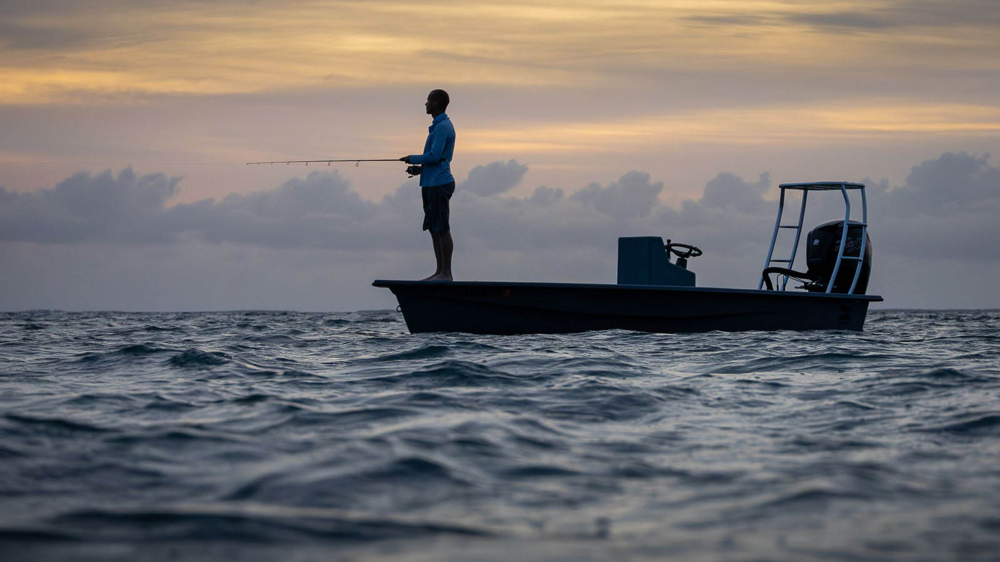
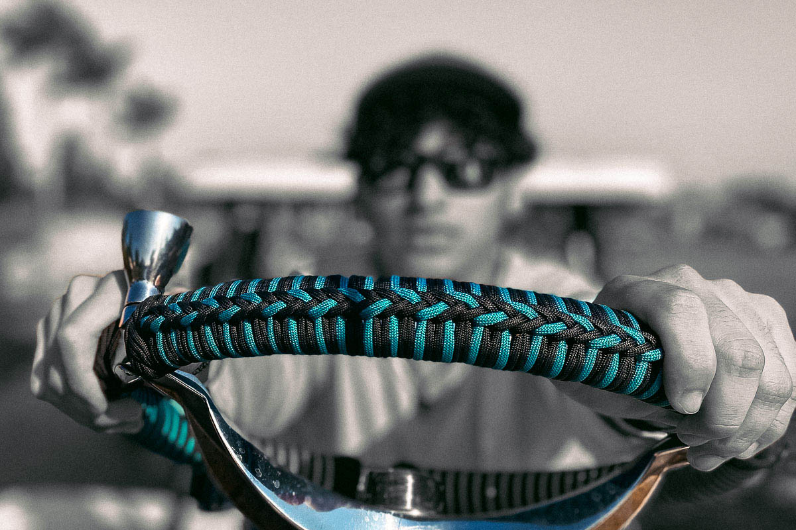

Welcome to SkiffHQ

Welcome aboard. SkiffHQ is where shallow-draft boat enthusiasts — from backyard boatbuilders to flats fishing pros — come together. Whether you're tuning up a microskiff, rebuilding a gheenoe, or crafting a technical poling skiff from scratch, this is your spot.
We’re not just about boats — we’re about the hands that build them and the waters they roam. Share your knowledge, ask questions, and join the community that celebrates DIY spirit and skinny water adventure.
Why SkiffHQ Exists

Our Mission
We bring together the skiff-obsessed — the builders, boaters, and dreamers. Our mission is to make space for curious minds, open knowledge, and salty hands. And we’ll keep it ad-free, forever.
Our Vision
A clean, focused platform where knowledge flows freely and community drives growth. Built by members, not marketers.
What We Believe
- We believe good answers come from experience.
- We believe great boats are born in garages and backyards.
- We believe in shallow water and deep respect.
- We believe in sharing knowledge, not hoarding it.
- We believe in funding community, not feeding ad networks.
Join the Skiff Forum
Curious about what other builders are up to? Got a question about skiff rigging? Or want to show off your build?
The SkiffHQ Forum is growing fast. Whether you're restoring a flats boat, tweaking a microskiff, or dialing in a technical poling skiff, you’ll find your people here. Share your latest project, get tips, and connect with other shallow water fanatics.
You don’t need to be a pro — just passionate about DIY boats and skinny water.
Popular Skiff Topics
Jump straight into the most active parts of the SkiffHQ Forum: